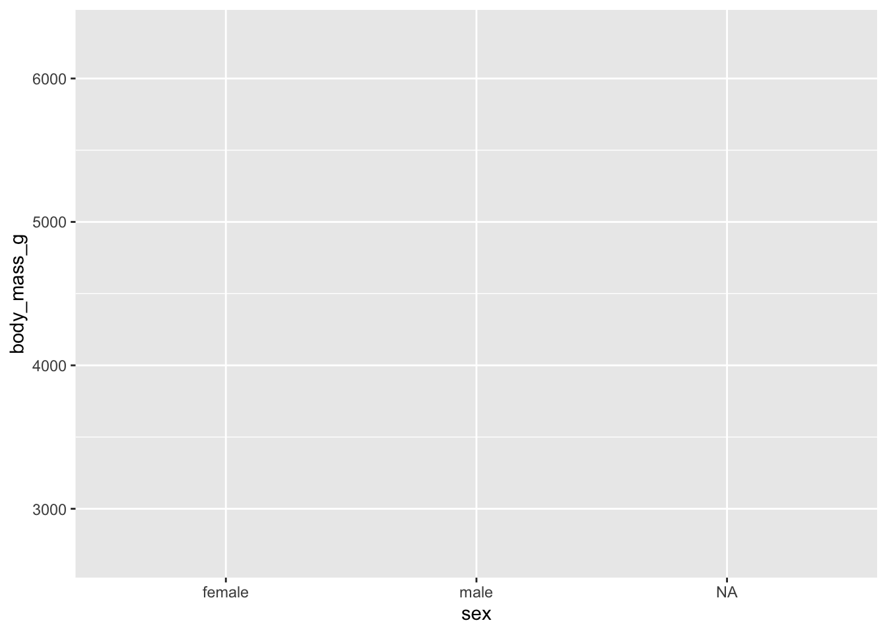
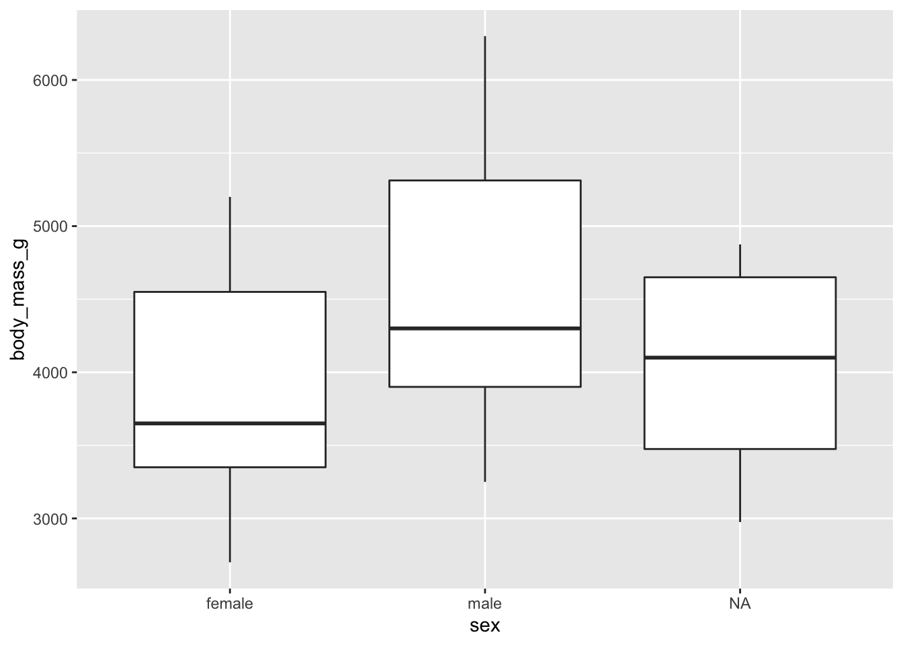

16.1 The Basic Graph
The following assumes you’re using R and RMarkdown.
Install the libraries if needed
install.packages("ggplot2")
install.packages("palmerpenguins")Load them
library(ggplot2) # for graphics
library(palmerpenguins) # penguins data setFirst, make sure we know a bit about our data set
head(penguins)## # A tibble: 6 × 8
## species island bill_length_mm bill_depth_mm flipper_l…¹ body_…² sex year
## <fct> <fct> <dbl> <dbl> <int> <int> <fct> <int>
## 1 Adelie Torgersen 39.1 18.7 181 3750 male 2007
## 2 Adelie Torgersen 39.5 17.4 186 3800 fema… 2007
## 3 Adelie Torgersen 40.3 18 195 3250 fema… 2007
## 4 Adelie Torgersen NA NA NA NA <NA> 2007
## 5 Adelie Torgersen 36.7 19.3 193 3450 fema… 2007
## 6 Adelie Torgersen 39.3 20.6 190 3650 male 2007
## # … with abbreviated variable names ¹flipper_length_mm, ²body_mass_gNext, we call ggplot, define our data set, and then the variables to plot on the x and y axes:
ggplot(data = penguins, aes(x = sex, y = body_mass_g))
This sets us up with a blank grid with x and y axis ticks corresponding to your variable values and x and y axis labels corresponding to your variables.
Now we call a plot type to represent our data, in this case, a box plot
ggplot(data = penguins, aes(x = sex, y = body_mass_g)) +
geom_boxplot()## Warning: Removed 2 rows containing non-finite values (`stat_boxplot()`).
We have some NA values in our data set. We won’t worry about cleaning those up here. But we will suppress the error message with a code chunk option.
```{r, warning = FALSE}
ggplot(data = penguins, aes(x = sex, y = body_mass_g)) +
geom_boxplot()
```
Chunk options are independent of ggplot itself and impact the knitting process of your RMarkdown document. For a more detailed overview of the code chunks options available to you, check out Xie Yihuis page on Knitr chunk options.